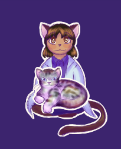
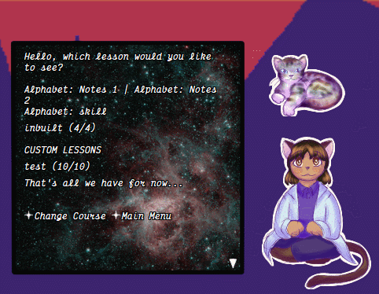

Tadora i Buterbrod

Tadora and her cat Buterbrod can be downloaded today for the low low price of free! You're gonna love them i promise.
So, now for the second pitch: Tadora is a ghost aimed at helping you practice/learn languages. She has lessons that function similar to duolingo, the capability of stories as found on duolingo, and some fun word games to try!
On a fresh install she comes with two courses: an adaptation of these example lessons by AlikLagodny on the duolingo forums, and an adaptation of the russian lessons from the site Вывучаем беларуску. more can be found at the courses tab above!

How to create a course: a weird guide
So, you're probably here because you like clicking tabs on pages. Me too! Now let's explain what's going on here:Tadora is a language practice ghost, sort of like duolingo in ghost form. Except I am one person, and duo is many. This means that though I may have the time and resources, I most certainly do not have the language knowledge required to create Tadora Courses tm for every language under the sun. Whether this is a good thing or not depends on who you ask, I suppose. This is where you come in!
To get started, double-click Tadora to open the main menu, then click over to the profile tab. Here, scroll down until you see the option labeled 'Creator Menu: 0'. Click that option, then head back to the main menu. (You should notice some new options in the profile page, but we're not concerned with those for now.)
Once you've returned to the main menu, click on the new button labeled Course Creator ( - ). This will take you to a language selection screen. If you have a fresh install, the only thing listed should be english@belarusian. But I will be honest with you: you probably do not know belarusian or wish to create a belarusian course for english speakers. This is okay! To add the language you do want to create a course for, click the Add Language button at the bottom. This will open an input box, which is where you want to put the language of your course.
(Note that the input box is not empty, but rather has english@belarusian in it. This is an example text! You'll want to input the language as language the user is learning from first, then the @ symbol to separate them, and language the user wants to learn second.)
For example, let's pretend we're making an Icelandic for English speakers course. We'll want to enter english@icelandic and click 'OK' or hit the return key on the keyboard. This will return us to the language selection menu, where our new language is now listed! So go ahead and click on that button to go to the next step.
The language being selected, we now have to select a course.
But wait! I hear you say, there's no course to select here!
No need to panic acquaintance reader! In place of our Add Language button on the previous page, we now have an Add Course button! This works the same exact way, where you click it, enter your course name in the input box, and then click on your newly added course to continue.
We are going to name our course smokys epic icelandic course so users know just how cool we are.
The final, most important page is the Lesson Selection Page. I hope you understand how to add a lesson now!
Our first lesson will be titled introduction to horse problems, so we'll want to click Add Lesson and type introduction to horse problems in the provided input box. This will generate some example text to get you started!
In theory, this is all you need to know to create a course, but I'll try to go a bit more in-depth below so you know what's going on. Have fun!
Lesson Types
lesson_type[0]There are three lesson types: Practice, Story and Notes. These are denoted by numbers 0, 1, and 2, respectively.
Practice is the traditional duolingo-style lesson. There's no structure, so all the excersize types are chosen at random when you start a lesson. So, while you technically can add text to these lessons, it won't display in the same place every single time - I don't reccomend it.
Story can also be understood as 'Textbook' style lessons. These will display your excersizes in the order they are written, so they can also be helpful if you want a specific structure to your lesson.
Notes are functionally the same as story lessons, except they are displayed in Tadora's lesson selection with
Notes: next to the name. Best suited for tips and grammar explanations!Language Tags
lang_tag[en-US,be-BY]Language tags are there so that Tadora can perform certain text manipulation effects correctly, so please don't remove this line!
They're only read from the very first lesson, so there's no need to add this line to all of your lessons. Keep that file size down! ...minorly.
All you need to do here is write the language tags for both of your languages separated by commas. If you need more than two, that's fine, but don't go adding the entire list of language tags, or else there will be some noticable lag!
For our super cool Icelandic course, we would write this as
lang_tag[en-US,is-IS] or lang_tag[en,is].You can find a list of common language tags here!
Course Credit
course_credit[Lead Writer (Icelandic, English): \_a[https://example.com]Smoky @ example.com\_a]Course credit is where you write all the important information about who wrote the course, where it was from, and where you can be found! This is also only read from the very first lesson, so like, don't delete it unless you really want to be anonymous.
\_a[]\_a is a link tag, like < a href=""> in HTML. The link goes in the brackets, and the displayed text between the closing bracket and second \_a tag.You can add manual linebreaks with
\n and \n[half] or add another line. For example:
course_credit[Lead Writer, Proofreader (English): \_a[https://example.com]Smoky @ example.com\_a]
course_credit[icelandic translated from google translate.\nDownloaded from \_a[https://example.com]Some place!\_a]Plain Text
word_text[I'm a text box!]Plain text is most important in Story and Note type lessons. You can use manual formatting with
\n and \n[half] for linebreaks, or separate chunks of text with a semicolon ; (equivalent to \n\n[half]). Adding a new line will start a separate page of text. For example:
word_text[Horse: I'm a talking horse!\nPerson: helvíti sem hesturinn getur talað\nHorse: Hér tala menn íslensku! Vá!]
word_text[Horse: I know Icelandic because I am a horse in iceland, probably.\nHorse: helvíti isn't related to me talking, though. Click to find out what that person said!;Horse: yay! You followed my instructions! The literal translation of helvíti sem hesturinn getur talað is \f[italic,1]Probably\f[default] 'hell that horse can talk'. Isn't language cool?]
(More about SakuraScript formatting here)
Word Matching
word_matches[dance@dansa;horse@hestur;library@bókasafni;people@fólk]Word matches are formatted with the language the user knows first, and the one they're learning second, seperated by the at symbol
@ for translations and semicolons ; for separate words.You can change the order if you want to, but keep in mind that the games pull their vocabulary from word_matches[] lines without a message, so it might get a little messed up!
If you want, you can add a message to your word matches with a hashtag
#, like so:word_matches[How do we refer to people?#friend@vinur;acquaintance@kunningi;horse friend@hestavinur]Matches can have as many words as you want within one pair of brackets - just note that in matches without a message, only four words will be displayed at a time. (For one with a message, all words to match will be displayed... so use caution!)
An example of both types:
word_matches[dance@dansa;horse@hestur;library@bókasafni;people@fólk]
word_matches[How do we refer to people?#friend@vinur;acquaintance@kunningi;horse friend@hestavinur]Sentence Translation
sentence_translation[i'm a dancing horse@ég er dansandi hestur]Sentence translation is formatted as the sentence to translate first, then the accepted translation(s), separated by the at symbol
@ . To add alternate translations, just add another @ symbol, and then the sentence to be accepted. As with Plain text, Cloze, and Find/Question excersizes, you can have more than one excersize within the square brackets [] if they're separated with a semicolon ; .Sentence translation excersizes cannot have a separate message added. Single words can be used.
They will only display one way, so if you want to have the user translate from the target language into the source language, you'll have to put the target language first and the source language translations second.
An example:
sentence_translation[i'm a dancing horse@ég er dansandi hestur@ég er hestur dansandi;they went to the library without me@þeir fóru á bókasafnið án mín]
sentence_translation[what is up with all these people petting me like seriously@hvað er málið með allt þetta fólk að klappa mér svona alvarlega]
Cloze Sentences
word_cloze[ég er dansandi |hestur|]Cloze sentences, if you haven't heard of them before, are kind of like dynamic fill in the blank sentences. In Tadora, you can have as many clozes in a sentence as you want!
To hide a word, enclose it in pipes | . If you want to add a hint to your hidden word, you can do so using the @ symbol within the pipes. (
|hestur@horse|, for example.)
As with Word Matches and Find/Question excersizes, you can add a message to the start with a hashtag # to separate it from the actual sentence.As with Plain text, Sentence translation, and Find/Question excersizes, you can have multiple clozes within a set of square brackets [] so long as they're separated with semicolons ; An example:
word_cloze[ég er dansandi |hestur|;|þeir fóru@they went| á |bókasafnið@library| án |mín@me|]
word_cloze[Where did the horse want to go with them?#mig langaði að fara á |bókasafnið| með þeim]
Find the word/Questions
word_searches[library@bókasafni@bókabúð@bókahillaFind the word/Questions are grouped together in writing, but they do function a little differently depending on how they're written! They do however share the same basic structure. The first and second words are, essentially, the pair you're looking for, and the other words can be anything! For a basic word find structure it may be helpful to have similar looking words.
When written without a message, the possible answers are shuffled.
When written with a message, answers are not shuffled - it then functions similar to a multiple-choice question on a quiz. (There will be an added space in between the message and the 'word to find'.) As an example:
word_searches[In Icelandic, what kind of horse#is this?@dansandi@dancing@reading@dansandi]A different example:
word_searches[Fill in the blank#ég er ___ hestur@dansandi@writing@dansandi@jumping@singing]As with Word Matches and sentence translation, multiple questions can be within the same pair of square brackets [] if they're separated with semicolons ;
Example of both types of question:
word_searches[library@bókasafni@bókabúð@bókahilla;to go@að fara@fer@fór til]
word_searches[Fill in the blank#ég er ___ hestur@dansandi@writing@dansandi@jumping@singing]
Conclusion (Our wonderful creation)
That's it! We're done! And so now that we're done i must for posterity show you what all these google translate icelandic sentences look like together, so you can copy/paste it into the first lesson of a course somewhere or something. I dunno.Two other things, before you continue: if you're reasonably tech-savvy, you can head over to wherever tadora's files are and create your courses by hand! If you do decide to do things that way, just note that the files are 0-indexed - meaning that the very first file where she will look to find important information needs to be named 0.txt. Past that I can't stop you from doing what you will... but the lesson display might get a bit weird.
The second thing is it's always a good idea to test your lessons! Besides the fact that it's just plain fun, sometimes you might run into formatting issues, and it's always better to catch those before you show your work to the general public, and not after.
lesson_name[introduction to horse problems]
lesson_type[0] //remember only types 1 and 2 will display linearly!
lang_tag[en,is]
course_credit[Lead Writer, Proofreader (English): \_a[https://example.com]SmokyCinnamonRoll @ example.com\_a]
course_credit[icelandic translated from google translate.\nDownloaded from \_a[https://example.com]Some place!\_a]]
word_text[Horse: I'm a talking horse!\nPerson: helvíti sem hesturinn getur talað\nHorse: Hér tala menn íslensku! Vá!]
word_text[Horse: I know Icelandic because I am a horse in iceland, probably.\nHorse: helvíti isn't related to me talking, though. Click to find out what that person said!;Horse: yay! You followed my instructions! The literal translation of helvíti sem hesturinn getur talað is \f[italic,1]Probably\f[default] 'hell that horse can talk'. Isn't language cool?]
word_matches[dance@dansa;horse@hestur;library@bókasafni;people@fólk]
word_matches[How do we refer to people?#friend@vinur;acquaintance@kunningi;horse friend@hestavinur]
sentence_translation[i'm a dancing horse@ég er dansandi hestur@ég er hestur dansandi;they went to the library without me@þeir fóru á bókasafnið án mín]
sentence_translation[what is up with all these people petting me like seriously@hvað er málið með allt þetta fólk að klappa mér svona alvarlega]
word_cloze[ég er dansandi |hestur|;|þeir fóru@they went| á |bókasafnið@library| án |mín@me|]
word_cloze[Where did the horse want to go with them?#mig langaði að fara á |bókasafnið| með þeim]
word_searches[library@bókasafni@bókabúð@bókahilla;to go@að fara@fer@fór til]
word_searches[Fill in the blank#ég er ___ hestur@dansandi@writing@dansandi@jumping@singing]
How to export a course
Exporting your course is very easy! For those in the know, Tadora generates these as Supplemental files, so just like creating a course, if you know where the files are you can do this manually! If not, though, that's perfectly okay - it's why this guide exists!
To get started, you'll want to make sure the creator menu is on. (Head to the profile menu and scroll down until you see Creator Menu: 0 or Creator Menu: 1. If it's 0, just click on it so it says 1!) Once you've done that, go back to the main menu (or double-click tadora to bring it up). There, you'll see an option labeled Export Course (). Go ahead and click on it!
The first menu you'll see should be familiar by now - all you have to do is select a language, and it'll take you to the Course selection menu.
In the course selection menu, you'll want to select the course you've spent all this time making! This will do one of two things:
One: Tadora will create your course! Yay!!! Once she says that it was created, click See File to see where your newly exported .zip file of a course is located. (note that she will append the hour and minute to the end of the file name - feel free to remove this!)
Two: Tadora will open the file explorer to the top level of the 'supplemental/tree/' folder, and say that the folder needs to be empty to continue. If this happens, all you need to do is delete the contents of the tree folder, close the file explorer, then try again.
And then hopefully your course is exported! All courses are exported to the '/zip' folder, which you'll find in the top layer of her files, next to '/ghost' and '/shell'. If you're going to need it often, I'd reccomend pinning the folder to quick access or making a shortcut or something. If not, though, after clicking see file, feel free to move the .zip file to a folder where you can access it more easily.
Uploading your course
Uploading a course somewhere is less inside my jurisdiction. Since she generates a plain .zip file, you should be able to upload it most anywhere! Google drive, Github or Neocities, for example, would be decent choices. (Note that Neocities is NOT to be used as a file repository, so if you want to use that, set up a simple website to let people know what you're all about!)
If hosting it somewhere yourself seems too intimidating, you can always shoot me a message on tumblr and I'd be happy to display it on my website here!